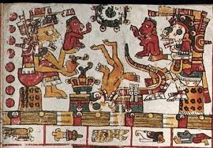
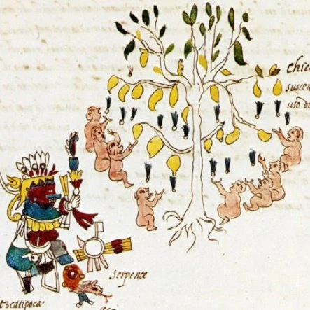
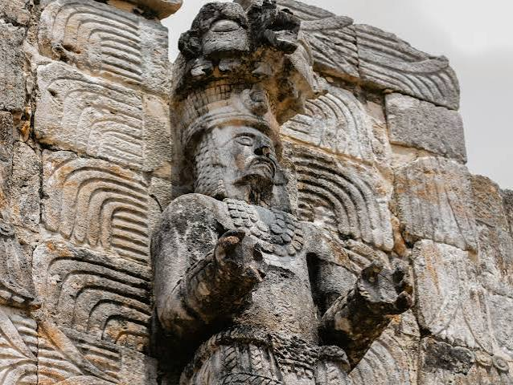
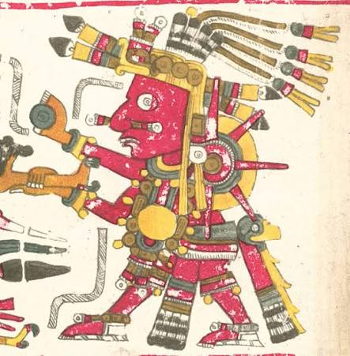

El Mictlán: el terrorífico descenso de nueve niveles donde ni los dioses se salvan de pagar el precio definitivo por cruzar.
Detrás de las ofrendas coloridas, los altares tradicionales y la conmovedora festividad del Día de Muertos se esconde una de las travesías mitológicas más oscuras, crueles y desgarradoras de la cosmovisión mesoamericana.
La leyenda del Mictlán es parte de la cosmogonía del México antiguo y da respuesta a preguntas que rondan la cabeza del ser humano desde siempre: ¿Qué pasa cuando morimos? ¿Hay vida después de la muerte? ¿a dónde vamos al morir?
Según esta leyenda mexicana, el Mictlán es el lugar del descanso eterno para las almas de quienes se nos han adelantado en el camino y fue creado por los dioses.
¿Quién gobierna en el Mictlán?
El Mictlán es gobernado y cuidado por Mictlantecuhtli (el señor del inframundo y dios de la muerte) y su esposa Mictecacíhuatl (la señora del Mictlán).
Juntos rigen los nueve niveles del inframundo mexica y custodian a las almas que llegan tras fallecer por causas naturales. Además, cuentan con ayudantes llamados mictlaneca que asisten en el tránsito de las ánimas y supervisan las pruebas del recorrido.

Lee mas de los gobernantes del inframundo en este articulo externo.
El Chichihuacuauhco
El Chichihualcuauhco (lugar del árbol nodriza) donde iban los niños muertos durante su período de lactancia, eran allí alimentados por el árbol de la leche, en espera de turno para una reencarnación inmediata.

El Tlalocan
El verdadero peligro del Tlalocan no reside solo en su eterna humedad, sino en el implacable castigo que aguarda a quienes llegan marcados por el agua: una existencia eterna bajo el dominio de Tláloc, donde la promesa de un paraíso verde oculta un aislamiento perpetuo y la absoluta imposibilidad de retornar al mundo de los vivos.

El Tonatiuh Ilhuícatl
El verdadero peligro del Tonatiuh Ilhuícatl no reside solo en su luz cegadora, sino en el implacable castigo que aguarda a quienes llegan marcados por la gloria: una existencia eterna bajo el dominio del sol Tonatiuh, donde la promesa de un cielo luminoso oculta un servicio perpetuo y la absoluta imposibilidad de un descanso definitivo.

Los 9 niveles
El verdadero peligro de los nueve niveles del Mictlán no reside solo en su oscuridad impenetrable, sino en el implacable castigo que aguarda a cada alma en su travesía: un recorrido aterrador a través de pruebas extremas, obstáculos mortales y bestias despiadadas, donde la promesa del descanso final oculta un juicio implacable y la absoluta imposibilidad de escapar del inframundo.
A continuacion, una lista con los 9 niveles mas detallados:
- Primer Nivel (Apanohuayan): Cruzar el caudaloso río Apanohuayan con la ayuda indispensable de un perro Xoloitzcuintle, siendo el único medio para evitar quedar atrapado en sus frías aguas por la eternidad.
- Segundo Nivel (Tepeme Monamictia): Un paraje mortal donde dos enormes cerros chocan continuamente entre sí, obligando a las almas a cruzarlos en el momento exacto para no ser aplastadas.
- Tercer Nivel (Itzetepetl): Un imponente y helado cerro de obsidiana cubierto de filosas cuchillas de piedra que desgarran sin piedad la piel de los viajeros en su trayecto.
- Cuarto Nivel (Itzehecayan): El implacable viento de obsidiana, una ventisca helada que arrastra fragmentos cortantes de piedra, azotando y desgarrando el cuerpo de las ánimas.
- Quinto Nivel (Panetiacoyan): Un páramo desolado donde las almas vuelan suspendidas como banderas a merced de corrientes invisibles que las zarandean sin control.
- Sexto Nivel (Timiminaloyan): Una zona tenebrosa donde una constante lluvia de flechas invisibles y mortales atraviesa y perfora los cuerpos de los difuntos.
- Séptimo Nivel (Teocoyohualoyan): El temible dominio donde acechan bestias salvajes y el jaguar arranca y devora el corazón de las almas, culminando su tormento físico.
- Octavo Nivel (Izteocayan): La profunda laguna de aguas negras donde las ánimas se enfrentan al cansancio definitivo, perdiendo las últimas fuerzas de su recorrido.
- Noveno Nivel (Chiconauhmictlán): La última morada del inframundo bajo el dominio de Mictlantecuhtli y Mictecacíhuatl, donde las almas finalmente se despojan de sus penas y alcanzan el descanso eterno.